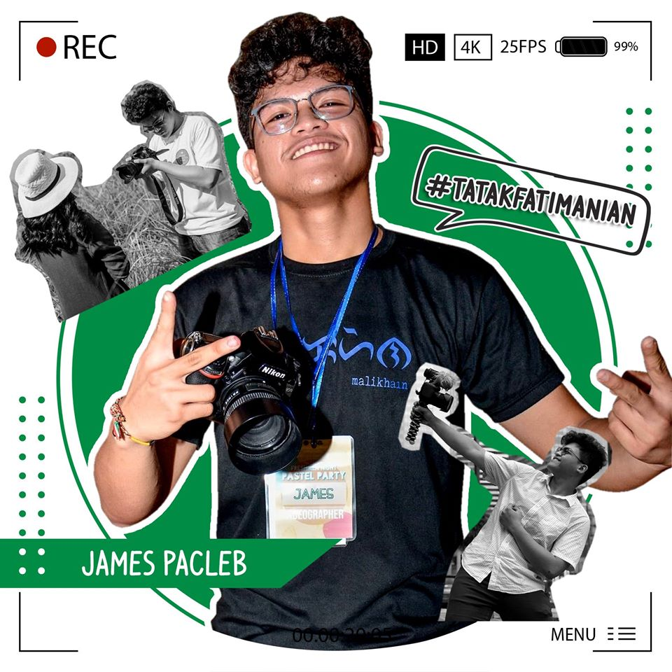

WHO AM I?I am Frances Camille A. Javines, 18 years old, my birthday is on October, and the date is 4-year of 2002. I’m currently living in Antipolo City, where I graduated my last year in Senior High School. I took Academic Track in the strand of Accountancy, Business and Management. We always change our residency but for a good reason. My father is a retired Chief Master Sergeant of Philippine Army in Fort Bonifacio, Taguig City, so since he retired after my first year in Senior High School, he decided to move out here in Antipolo City. As for my mother, she is currently a teacher in Caloocan City in a public school. |
What do I do?
|
Having hobbies that helps you get rid of you boredom is important, because it gave us a tasks where we could do, for us to be busy and be productive in every day, also the most important lesson to have hobbies is to develop, improve, and perform well your skill. My first hobbit is I do sleep a lot, it is sad to hear or see rather because I type it and not verbally said, but sleeping really gives me the feeling of satisfaction, sleeping really improves my state of mind. When I am not sleeping I mostly do eating and do some household chores, because for me cleanliness is a must, I can’t work or think when my surrounding is not clean. Way back on my elementary and high school days, I am a student-athlete, where I play badminton and table tennis. Table tennis is the first sports I learned, but I give focus more in playing badminton, since my two brothers are playing as well, yet after focusing on it, I found myself coming back to play table tennis. I also try javelin throw in elementary in my 4th grade, but when my high school comes, I focus more on my studies which resulted in getting High Honor in my 9th and 10th grade and also High Honor on my Grade 11 senior high school year, but unfortunately in my last school year, I didn’t get any awards but still, I am happy on it and that I enjoy my last school year and meet friends that I can count on. I am also a fan of Team Payaman, even when they are still starting yet, as Cong TV leads his friends on being “payaman” not only his friends but also their fans. He have thought many good things, one of this is that “Dream big, Aim for the sky. Make it happen. Mata sa langit, Paa sa lupa” when he say this, it is the time where his big break occurs. It affects many “Paa” as he calls his fans. |
My Academic Status
|
I am currently a first year student at World Citi Colleges-Antipolo Campus where I take Bachelor of Science in Information Technology. I know that what I take in Senior High School is somehow not related on my course today, but I will not stop believing that in this course I will succeed and graduated on time. It is difficult to do something you don’t have your passion on it or you don’t have the will to do it, but I believe that when you start appreciating it and putting yourself on it, you will love it as time goes by. |
My Goals in Life
|
I dreamt of becoming a teacher, because my mother is a teacher and I witness her throughout her journey of being a teacher, but when I acquire knowledge on how the job works on Information Technology, I’ve made my decision that after graduating in BSIT, I will work first for 3-6 years in a company and then I will pass the requirement in Philippine Army to become their IT employee, because I realize that salary really matter after all. |
James Pacleb Photography
|  |
A former president of an organization in Our Lady of Fatima University, self-taught Photographer who encouraged his passion through street Photography. Mr. James starts as a school cinematographer, and as he gained experience and shills, he founded his own studio called James Pacleb Photography, mainly to debut's, civil wedding, and birthday parties. Now, James Pacleb freelances to other studios particularly to Patrick Abrian Photography, the business is temporarily stop due to pandemic and will return to the event's industry once the 2021 starts.
|
Contact Information
- Antipolo City 1870
- francescjavines@gmail.com
- +6356 4629856
- James Ryan V. Pacleb
- +6349 5089331
James Pacleb Photography
For more Information:
Copyright © 2020 Frances Camille A. Javines.